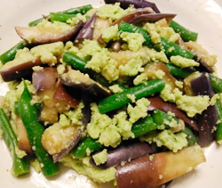

ナスとサヤインゲンのずんだ和え
- 調理時間： 30分
- （一人当たり）
- カロリー：62kcal
- たんぱく質：4.7g
- 脂質：2.0g
- 炭水化物：7.6g
- 塩分：1.0g


＜2人分＞
- ナス
- 2本
- サヤインゲン
- 4本
- 枝豆（鞘付き）
- 100g
- だし汁
- お好みで
- 塩
- お好みで


- 枝豆はたっぷりの湯に塩（分量外）を加えてゆで、ザルに広げて冷ます。
鞘から取り出し、薄皮をむき、みじん切りにした後、すり鉢で滑らかになるまですりつぶす。
だし汁と塩を加えて、更にすり混ぜ、ずんだ衣を作る。 - ナスはヘタを切り、1本ずつをラップでくるみ、電子レンジ600ｗで3分加熱する。
ナスが冷めたら、縦4～6等分に切り、食べやすい幅に切りそろえ、醤油（分量外）を回しかけて下味をつける。 - インゲンは塩ゆでして、食べやすい長さに切る。
- ナスとインゲンを①のずんだ衣で和えて完成。
ナスとサヤインゲンのずんだ和え
大豆の成長段階で収穫したものが枝豆。そのため、枝豆の旬は夏。大豆の収穫時期は秋頃となります。今は枝豆用に改良した枝豆専用品種も生まれ、その品種は数百種類。
国内で一般的な枝豆は、白毛豆(青豆)。さやの部分に白い産毛が生えており、種子がエメラルド色をしたものです。「サッポロミドリ」「湯あがり娘」「玉すだれ」など多くの品種があります。茶豆は香ばしい香りと強い甘味が特徴で、山形県鶴岡市の「だだちゃ豆」や、新潟県の「黒埼茶豆」が有名です。産地や品種で食べ比べてみても楽しいですね